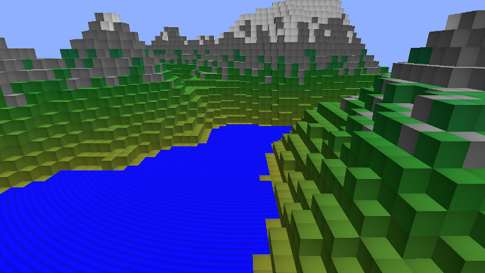

Qt Quick 3D - Custom Instanced Rendering
Demonstrates instancing with custom materials and a C++ instance table.

This example shows how to create instance data programmatically in C++, and how to use custom materials with instanced rendering.
Custom instancing table
We define our table as a subclass of QQuick3DInstancing and add some properties so we can control it from QML:
class CppInstanceTable : public QQuick3DInstancing { Q_OBJECT QML_ELEMENT Q_PROPERTY(int gridSize READ gridSize WRITE setGridSize NOTIFY gridSizeChanged) Q_PROPERTY(float gridSpacing READ gridSpacing WRITE setGridSpacing NOTIFY gridSpacingChanged) Q_PROPERTY(int randomSeed READ randomSeed WRITE setRandomSeed NOTIFY randomSeedChanged)
The virtual function getInstanceBuffer is reimplemented to return the instancing data:
QByteArray CppInstanceTable::getInstanceBuffer(int *instanceCount) { if (m_dirty) { BlockTable blocks(m_gridSize, m_randomSeed); m_instanceData.resize(0); auto idxToPos = [this](int i) -> float { return m_gridSpacing * (i - m_gridSize / 2); }; int instanceNumber = 0; for (int i = 0; i < m_gridSize; ++i) { float xPos = idxToPos(i); for (int j = 0; j < m_gridSize; ++j) { float zPos = idxToPos(j); int lowest = blocks.lowestVisible(i, j); int highest = blocks.highestBlock(i, j); for (int k = lowest; k <= highest; ++k) { float yPos = idxToPos(k); QColor color = blocks.getBlockColor(i, j, k); float waterAnimation = blocks.isWaterSurface(i, j, k) ? 1.0 : 0.0; auto entry = calculateTableEntry({ xPos, yPos, zPos }, { 1.0, 1.0, 1.0 }, {}, color, { waterAnimation, 0, 0, 0 }); m_instanceData.append(reinterpret_cast<const char *>(&entry), sizeof(entry)); instanceNumber++; } } } m_instanceCount = instanceNumber; m_dirty = false; } if (instanceCount) *instanceCount = m_instanceCount; return m_instanceData; }
Custom material
We use a shaded custom material, meaning that Qt gives us the basic implementation, and we just specify additional logic.
The only customization we need for the vertex shader is for passing information to the fragment shader. By default, Qt only provides the instance data to the vertex shader, so we pass it on as vCustomData. We also calculate the global position of the vertex and make it available as vGlobalPosition.
// Copyright (C) 2023 The Qt Company Ltd.
// SPDX-License-Identifier: LicenseRef-Qt-Commercial OR BSD-3-Clause
VARYING vec4 vCustomData;
VARYING vec3 vGlobalPosition;
void MAIN()
{
vCustomData = INSTANCE_DATA;
// MODEL_MATRIX does not exist when instancing
vec4 pos = INSTANCE_MODEL_MATRIX * vec4(VERTEX, 1.0);
vGlobalPosition = pos.xyz;
}
The fragment shader performs a simple wave animation for water surfaces. Everything else gets a subtle radial gradient. The difference is determined by the first element of the custom data.
VARYING vec4 vCustomData;
VARYING vec3 vGlobalPosition;
void MAIN()
{
METALNESS = 0.0;
ROUGHNESS = 1.0;
FRESNEL_POWER = 5.0;
float c;
if (vCustomData.x > 0)
c = 1.0 - (1.0 + sin(sqrt(vGlobalPosition.x*vGlobalPosition.x + vGlobalPosition.z*vGlobalPosition.z) - uTime/200.0)) * 0.2;
else
c = 1.0 - 0.25 * (UV0.x*UV0.x + UV0.y*UV0.y);
BASE_COLOR = vec4(c, c, c, 1.0);
}
Using the custom table and material in QML
We create a custom material using the shaders we made earlier, and add a new property uTime. This property is automatically mapped to the corresponding uniform in the fragment shader.
CustomMaterial { id: cubeMaterial property real uTime: frametimer.elapsedTime FrameAnimation { id: frametimer running: true } vertexShader: "cubeMaterial.vert" fragmentShader: "cubeMaterial.frag" }
Finally, we create our model and apply the custom material and instance table:
Model { id: instancedCube property real cubeSize: 15 scale: Qt.vector3d(cubeSize/100, cubeSize/100, cubeSize/100) source: "#Cube" instancing: CppInstanceTable { gridSize: 65 gridSpacing: instancedCube.cubeSize randomSeed: 1522562186 } materials: [ cubeMaterial ] }
Note that we only create a single cube: All the heavy lifting is done by the GPU.
Files:
- custominstancing/CMakeLists.txt
- custominstancing/InstancingExample/cubeMaterial.frag
- custominstancing/InstancingExample/cubeMaterial.vert
- custominstancing/InstancingExample/custominstancing_qml_module_dir_map.qrc
- custominstancing/InstancingExample/main.qml
- custominstancing/InstancingExample/qmldir
- custominstancing/cppinstancetable.cpp
- custominstancing/cppinstancetable.h
- custominstancing/cubeMaterial.frag
- custominstancing/cubeMaterial.vert
- custominstancing/custominstancing.pro
- custominstancing/main.cpp
- custominstancing/main.qml
- custominstancing/qml.qrc